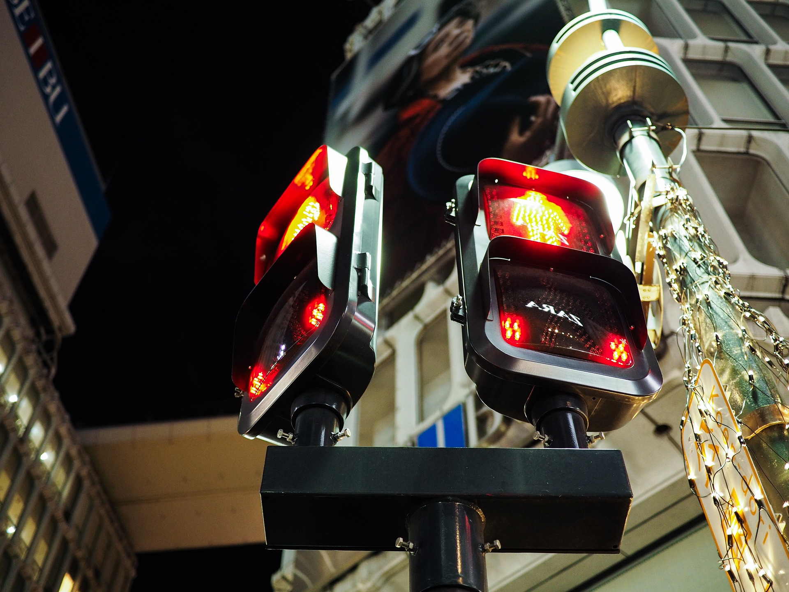

Es muy importante que los niños, en especial los que se encuentran en el rango de edad de los 5 a los 9 años, conozcan los elementos físicos de las vías públicas referentes al tráfico para adquirir hábitos de comportamiento correctos en el entorno vial.
La vía pública tiene elementos que los niños deben identificar de manera correcta, tales como acera, calzada, semáforo, acotamiento. También es muy importante dejar claro que los peatones circulan por la acera y los vehículos circulan por la calzada. Por otra parte deben de considerar y aprender que existen diferentes tipos de vías como lo son: Urbanas, Interurbanas, Terracerias y Autopistas.
El peatón es el usuario más vulnerable de las de la vía, es por eso que debemos considerar una serie de reglas como: No caminar cerca del borde de la banqueta ya que corremos el riesgo de ser atropellados, no llevar animales sueltos, no tirar basura en las vías, no jugar cerca de la calzada o avenida, nunca situarnos detrás de vehículos aparcados, recordar que es fundamental no solo ver si no también ser vistos.
Los peatones, siempre que sea posible deben cruzar por los pasos de peatones de la siguiente manera: Al llegar al paso de peatones nos detendremos en la acera, no en la calzada, mostraremos la intención de cruzar mirando a los coches y a sus conductores, una vez que los coches se han detenido, comenzaremos a cruzar, si la calle es de un solo sentido, cruzar por el lado del paso de peatones más alejado al coche parado, si la calle es de dos sentidos deberemos asegurarnos que los coches que circulan por ambos sentidos van a parar.
Cruzar siempre por el lugar que nos permita más visibilidad, y anticipar la trayectoria de los vehículos en todos los sentidos de la marcha, evitar este tipo de situación, buscando el paso de peatones más cercano, no salir nunca de entre los coches, es muy peligroso.
Semáforos
Los semáforos sirven para informar a los conductores y a los peatones, la mayoría de los semáforos suelen tener dos partes, arriba: para los conductores y tienen 3 luces redondas: Roja, Amarilla y Verde y Abajo: para los peatones y tienen dos muñecos: uno Rojo parado y uno Verde andando.Los coches tienen que fijarse en la parte de arriba, los peatones tienen que fijarse en la parte de abajo.
Color Rojo: quiere decir que el paso está cerrado, color amarillo: nos avisa que va a cambiar a rojo, color verde: indica que podemos pasar. Para cruzar correctamente deberemos: Esperar en bordillo de la acera no en la calzada, mirar las luces que hay para los peatones, cruzar cuando el muñeco está en verde y nos aseguremos de que los coches están parados, cuando el muñeco empieza a parpadear nos indica que va a cambiar a rojo y dará paso a los vehículos, no debemos cruzar.
 Hay cosas que para los adultos parecen simples, porque se nos olvida que también fuimos niños.Si circulamos por la carretera como peatón deberemos seguir las siguientes instrucciones: circular siempre por el lado izquierdo de la calzada de tal manera que al caminar siempre vea a los coches venir de frente, caminar siempre por el arcén y en fila india, recuerda que no está permitido caminar ni atravesar las autopistas, si tenemos que cruzar lo haremos por el lugar más seguro y con mayor visibilidad, recordar que las curvas no es un buen lugar para cruzar.
Source: El niño como peatón. Photographs by Pixabay.